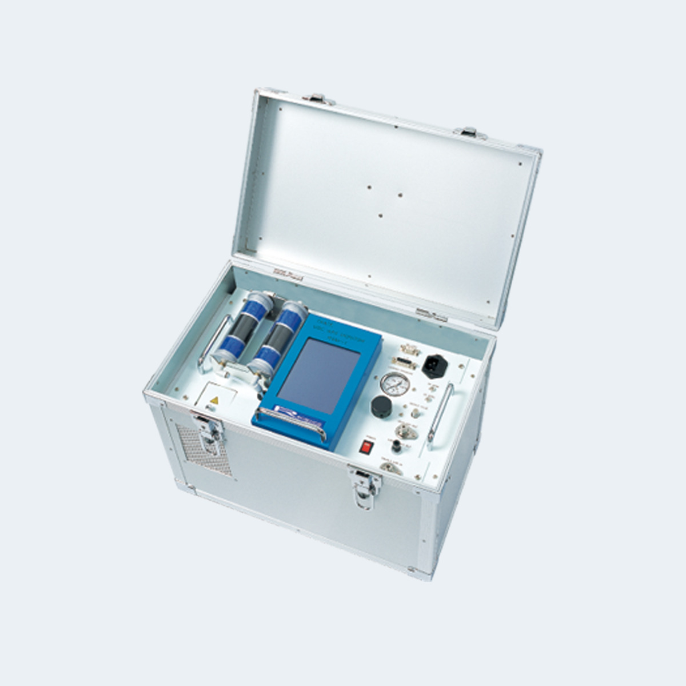
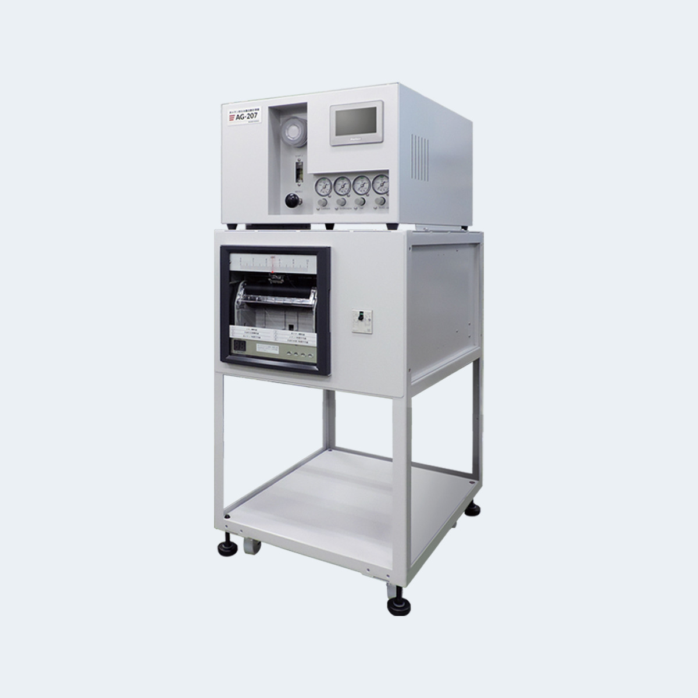
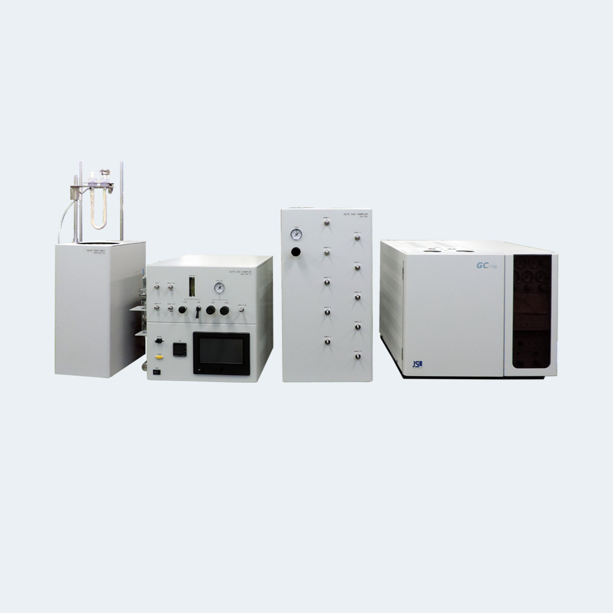
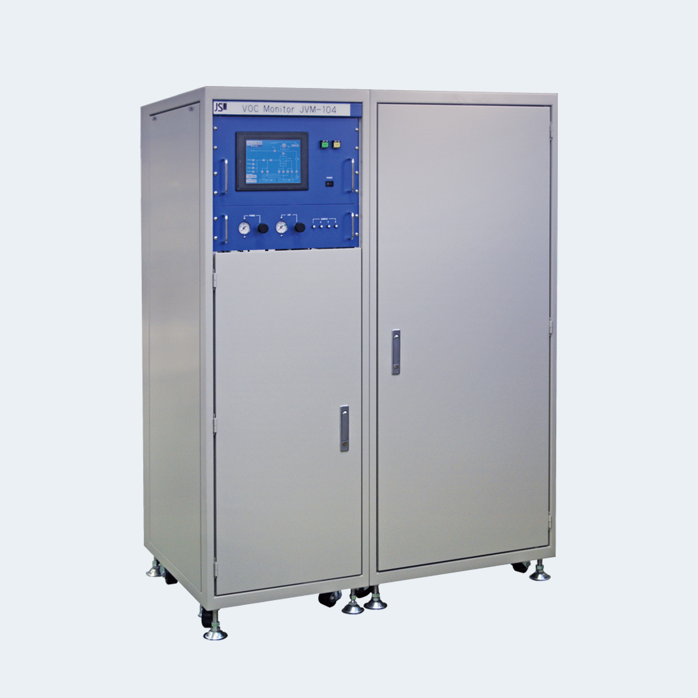

<main id="main">

    <!-- ======= Breadcrumbs ======= -->
    <!-- <div class="breadcrumbs d-flex align-items-center" style="background-image: url('assets/img/environ/rgm1_p.jpg');">
      <div class="container position-relative d-flex flex-column align-items-center" data-aos="fade">
  
        <h2>Products</h2>
        <ol>
          <li><a href="index.html">Home</a></li>
          <li>GAS Chromatograph Environmental Products</li>
        </ol>
  
      </div>
    </div> -->
    <!-- End Breadcrumbs -->
    <!--  -->
  
    <section id="projects" class="projects">
      <div class="container" data-aos="fade-up">
  
            <div class="portfolio-isotope  " data-portfolio-filter="*" data-portfolio-layout="masonry" data-portfolio-sort="original-order">
  

              <div class="col-md-1">
                <table class="table portfolio-flters table-bordered">
                  <thead>
                    <tr>
                      <th><li data-filter="*" class="filter-active" style="font-size: large; ">Environmental</li></th>
                    </tr>
                  </thead>
                  <tbody>
                   
                    <tr>
                      <td><li data-filter=".filter-rgm" style="font-size: small;">RGM-1 Low concentration VOC monitor </li></td>
                    </tr>
                    <tr>
                      <td><li data-filter=".filter-non"style="font-size: small;">AG-207 Non-methane Hydrocarbon Meter </li></td>
                    </tr>
                    <tr>
                      <td><li data-filter=".filter-dhm"style="font-size: small;">GBA-202 series Odor substance automatic measurement system </li></td>
                    </tr>
                    <tr>
                      <td><li data-filter=".filter-his"style="font-size: small;">JVM-100 series Online underwater VOC measuring device </li></td>
                    </tr>
                  </tbody>
                </table>
              </div>
  
  
              <!-- <div class="list-group " id="one">
                <ul class="portfolio-flters list-group" data-aos="fade-up" data-aos-delay="100">
                  <li data-filter="*" class="filter-active">All</li>
                  <li data-filter=".filter-rgm">Low concentration VOC monitor RGM-1</li>
                  <li data-filter=".filter-non">Non-methane Hydrocarbon Meter AG-207</li>
                  <li data-filter=".filter-dhm">Odor substance automatic measurement system GBA-202 series</li>
                  <li data-filter=".filter-his">Online underwater VOC measuring device JVM-100 series</li>
                  
                </ul>
              </div> -->
              
      
              <div class="row gy-4 portfolio-container" id="two" data-aos="fade-up" data-aos-delay="200"> 
      
                <div class="col-md-12  portfolio-item filter-rgm">
                  <div class="card">
                  <div class="row">
                    <div class="col-md-4 d-flex align-items-center">
                      
                    </div>
                    <div class="col-md-8 d-flex align-items-center">
                      <div>
                        <h4>RGM-1 Low concentration VOC monitor 
                        </h4>
                        <p>This analyzer enables low-concentration VOC analysis in a compact housing by integrating a sampling system and a packed column gas chromatograph system.</p>
                        <li><strong>Excellent operability</strong></li>
                           <p>The touch panel allows for easy measurement through interactive operation from the menu screen</p>
                           <li ><strong>No carrier cylinder required</strong></li>
                           <p>Although it uses gas chromatography, it does not require a carrier cylinder and is housed in an aluminum carrying case, so it can be measured anywhere as long as there is an AC 100V power source.</p>
                           <li><strong>Built-in data memory function</strong></li>
                           <p>It has a built-in automatic repeat measurement function for up to nine times and a data memory function, making it possible to monitor changes over time in the field.</p>

                        </div>
                    </div>
                    <div class="col-md-12 d-flex justify-content-center">
                        <a [routerLink]="['/contact']" >
                            <button class="btn" style="border-radius: 20px; border-color: blueviolet ;  " >
                                Get Qoute
                            </button>
                        </a>
                      </div>
                  </div>
                </div>
                </div>
      
                <div class="col-md-12  portfolio-item filter-non">
                  <div class="card">
                    <div class="row">
                      <div class="col-md-4 d-flex align-items-center">
                        
                      </div>
                      <div class="col-md-8 d-flex align-items-center">
                        <div>
                          <h4>AG-207 Non-methane Hydrocarbon Meter                          </h4>
                          <p>This measuring instrument is an automatic measuring instrument for continuously measuring the concentration of hydrocarbons in the ambient air, and employs a "non-methane hydrocarbon (direct method) measurement method" that directly measures the concentration of methane as a hydrocarbon and non-methane hydrocarbons, which are causative substances in the generation of photochemical oxidants, by gas chromatography. Operation is performed on an LCD touch panel, and the interactive format makes it easy to operate. It also displays the measurement results and various parameters. It has a compact appearance, fits into a standard 19-inch rack, and can be stored in the same rack as other measuring instruments, allowing for effective use of installation space.</p>
                            <li style="text-align:justify;  padding-right: 2%;">This is a non-methane hydrocarbon meter that complies with JIS B7956 and the 6th edition of the Environmental Air Continuous Monitoring Manual.</li>
                            <li style="text-align:justify;  padding-right: 2%;">Digital telemeter is equipped as standard (conforms to the common specifications for telemetering of automatic ambient air measuring instruments set by the Ministry of the Environment).</li>
                            <li style="text-align:justify;  padding-right: 2%;">The LCD touch panel not only displays measurement results and various parameters on the screen, but also allows easy operation through an interactive format.</li>
                            <li style="text-align:justify;  padding-right: 2%;">It consumes little carrier gas and has excellent running costs.</li>
                            
                            
                            

                        </div>
                      </div>
                      <div class="col-md-12 d-flex justify-content-center">
                          <a [routerLink]="['/contact']" >
                              <button class="btn" style="border-radius: 20px; border-color: blueviolet ;  " >
                                  Get Qoute
                              </button>
                          </a>
                        </div>
                      </div>
                    </div>
                  </div>
      
             
                


                  <div class="col-md-12  portfolio-item filter-dhm">
                    <div class="card">
                    <div class="row">
                      <div class="col-md-4 d-flex align-items-center">
                        
                      </div>
                      <div class="col-md-8 d-flex align-items-center">
                        <div>
                          <h4>GBA-202 series Odor substance automatic measurement system </h4>
                          <p>GBA-202 series

                            Automatic odor substance measurement system The
                            
                            automatic odor substance measurement system developed by J Science Lab Co., Ltd. is a system that automatically measures odor substances based on the Offensive Odor Prevention Act. It fully automates the process from trap tube concentration and thermal desorption to introduction into GC and data processing. Anyone can now easily perform odor analysis, which was previously a time-consuming task, and work efficiency has improved several levels.</p>
                         <li style="text-align:justify;  padding-right: 2%;">Measurements can be performed in accordance with the Offensive Odor Prevention Act (Act No. 91 of June 1, 1971, last revised and publicly announced on March 18, 2011).</li>
                         <li style="text-align:justify;  padding-right: 2%;">This is an automatic concentration system that uses the cold trap method with liquid oxygen or liquid argon.</li>
                         <li style="text-align:justify;  padding-right: 2%;" >A series of operations from concentration to GC analysis can be performed fully automatically.</li>
                         <li>In trimethylamine analysis, the release procedure by adding alkali is also performed automatically.</li>
                         <li style="text-align:justify;  padding-right: 2%;">Excellent reproducibility is achieved by adopting a digital integrating flow meter and valve introduction method.

                         </li>
                         <li style="text-align:justify;  padding-right: 2%;">By connecting to a bag autosampler, multiple samples can be processed continuously (for sulfur compounds and organic solvents). When repeating the analysis of each sample (up to 3 times) during a multi-sample analysis, the concentration amount can be changed for each analysis.</li>
                         <li style="text-align:justify;  padding-right: 2%;">By connecting with the optional automatic liquid Ar supply device, unmanned operation at night etc. is possible.</li>
                         <li style="text-align:justify;  padding-right: 2%;">By using the measuring tube introduction method in combination, samples of any concentration can be handled.</li>
                         <li style="text-align:justify;  padding-right: 2%;">By using the measuring tube introduction method in combination, samples of any concentration can be handled.</li>
  
                          </div>
                      </div>
                      <div class="col-md-12 d-flex justify-content-center">
                          <a [routerLink]="['/contact']" >
                              <button class="btn" style="border-radius: 20px; border-color: blueviolet ;  " >
                                  Get Qoute
                              </button>
                          </a>
                        </div>
                    </div>
                  </div>
                  </div>
        
                  <div class="col-md-12  portfolio-item filter-his">
                    <div class="card">
                      <div class="row">
                        <div class="col-md-4 d-flex align-items-center">
                          
                        </div>
                        <div class="col-md-8 d-flex align-items-center">
                          <div>
                            <h4>JVM-100 series Online underwater VOC measuring device </h4>
                            <p>JVM-100 series

                                Online underwater VOC measuring device. Continuously measures volatile organic compounds (VOCs) in river water, industrial wastewater, etc. using the headspace-GC method.</p>
                              <li style="text-align:justify;  padding-right: 2%;">Gas chromatography allows simultaneous measurement of multiple components.</li>
                              <li style="text-align:justify;  padding-right: 2%;">Two detectors, FID and EN, can measure trace concentrations below ppb (EN is optional).</li>
                              <li style="text-align:justify;  padding-right: 2%;">The entire process from water sampling to GC measurement and drainage is fully automated.</li>
                              <li style="text-align:justify;  padding-right: 2%;">The headspace section is a transparent container, allowing visual observation of the operation process.</li>
                              <li style="text-align:justify;  padding-right: 2%;"  >Water leakage prevention is ensured by the leak alarm system.</li>
                              <li style="text-align:justify;  padding-right: 2%;">The measurement results are transmitted to a higher-level DCS etc. at 4-20mA.</li>
                              
                              
                              
  
                          </div>
                        </div>
                        <div class="col-md-12 d-flex justify-content-center">
                            <a [routerLink]="['/contact']" >
                                <button class="btn" style="border-radius: 20px; border-color: blueviolet ;  " >
                                    Get Qoute
                                </button>
                            </a>
                          </div>
                        </div>
                      </div>
                    </div>
        
               
                 
      
              </div><!-- End Projects Container -->
      
            </div>
           
            
  
  
           
  
  
            
  
          
      </div>
    </section><!-- End Our Projects Section -->
  
  </main><!-- End #main -->